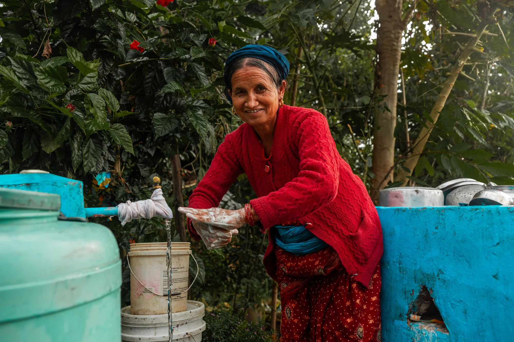

NƯỚC SẠCH · SỨC KHỎE · TƯƠNG LAI
Nước sạch không nên là điều xa xỉ.
Cùng nâng cao nhận thức và tiếp sức cho những cộng đồng đang cần nguồn nước an toàn hơn.
Một hành trình mỗi ngày của hàng triệu người để tìm nước.
ĐIỀU CỐT YẾU
Vì sao là nước?
Nước là nền tảng của sự sống. Nước sạch giúp con người khỏe mạnh, học tập, làm việc và xây dựng tương lai cho cộng đồng.

SỨC KHỎE
Sức khỏe bắt đầu từ nước sạch
Nước an toàn giúp duy trì sức khỏe, vệ sinh cá nhân và giảm nguy cơ mắc các bệnh lây truyền qua nguồn nước.
BẠN CÓ BIẾT?
Năm 2024, ước tính khoảng 426 triệu người tại châu Phi chưa tiếp cận dịch vụ nước uống cơ bản.
Con số được ước tính từ dân số và tỷ lệ tiếp cận nước uống cơ bản của Ngân hàng Thế giới tại 51 quốc gia có đủ dữ liệu. Nguồn nước không an toàn làm tăng nguy cơ bệnh tật, nhưng dữ liệu hiện có không xác định số người vừa thiếu nước vừa mắc bệnh tiêu hóa.
Tìm hiểu thêmPHÓNG SỰ · TRUYỀN HÌNH ĐỒNG THÁP
Trẻ em trước nguy cơ thiếu nước sạch
CHUNG TAY TẠO THAY ĐỔI
Mỗi đóng góp đều có thể mở ra một khởi đầu mới.
Một tương lai khỏe mạnh bắt đầu từ một nguồn nước an toàn.
Water for Africa là dự án nâng cao nhận thức về khả năng tiếp cận nước sạch và những ảnh hưởng của nguồn nước không an toàn đến sức khỏe cộng đồng. Chúng tôi chia sẻ dữ liệu đáng tin cậy để câu chuyện này được nhìn thấy rõ hơn.